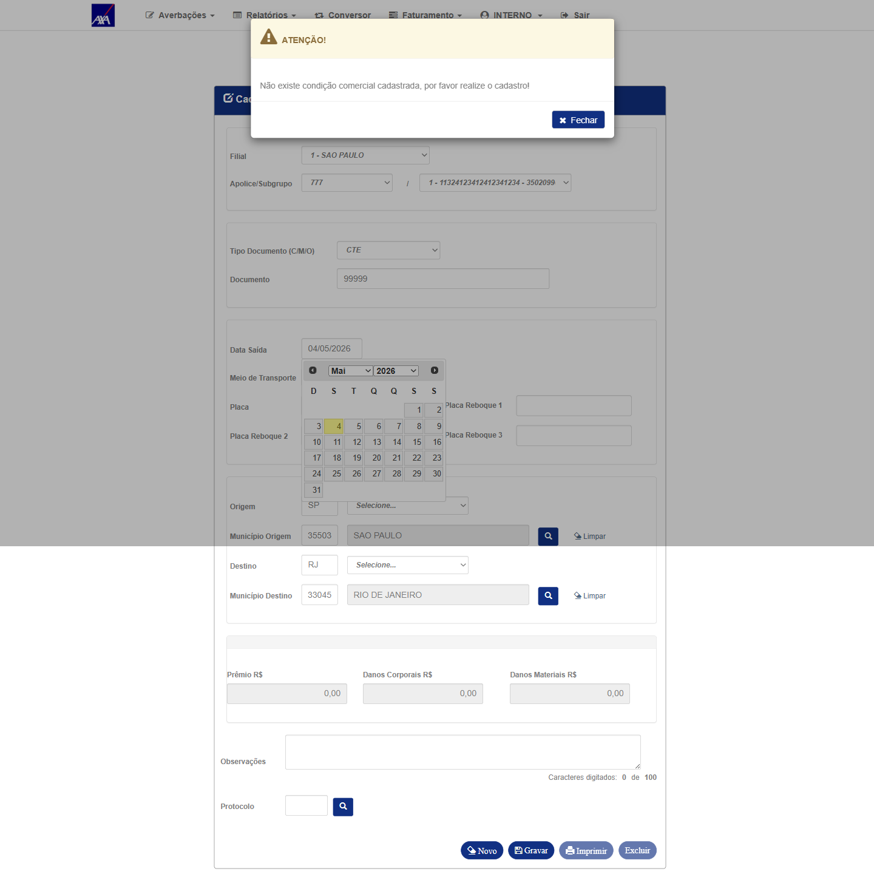
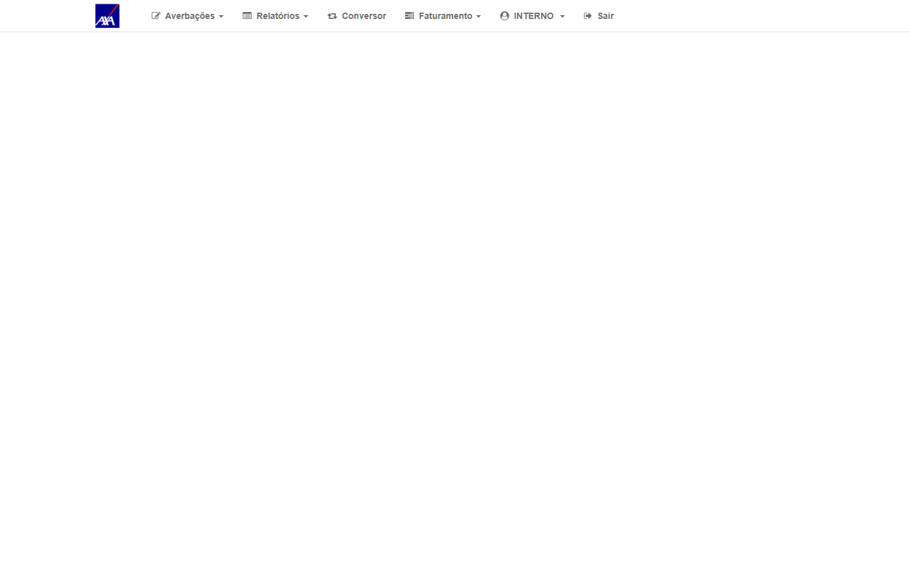
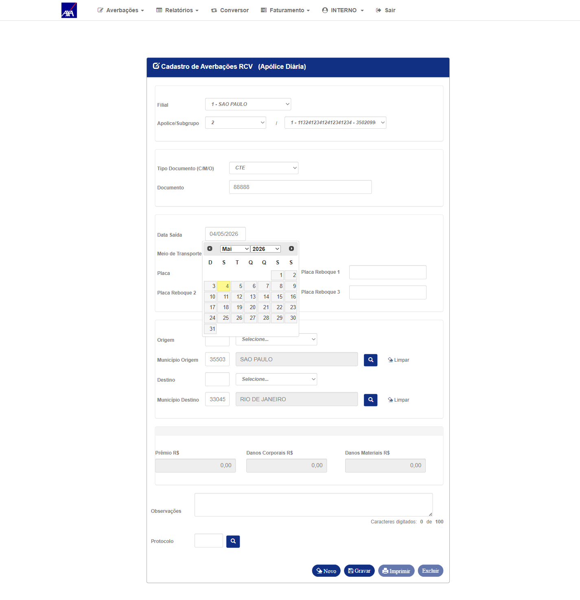
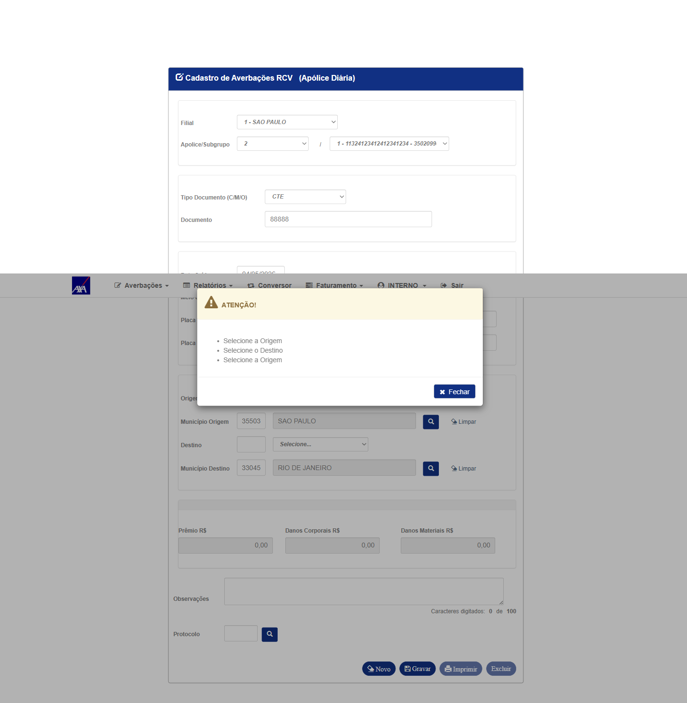
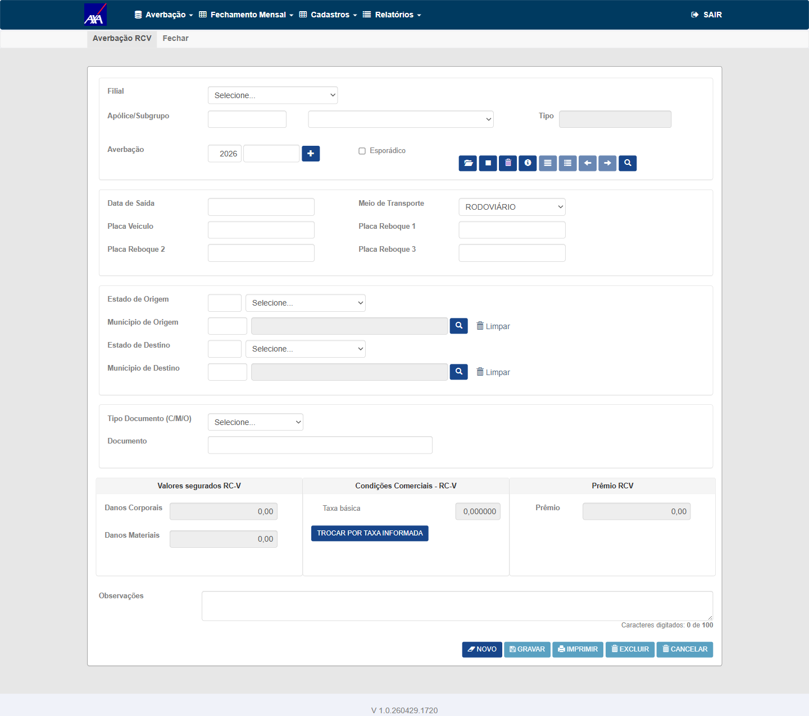
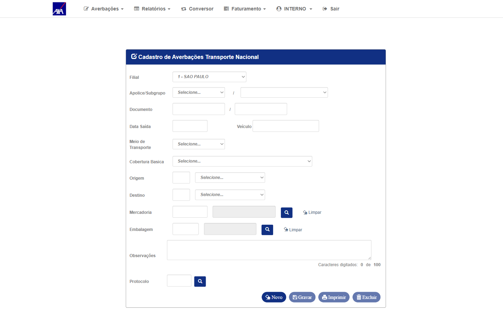

Bug reportado no CITNET: ao tentar realizar uma averbação manual no ramo 59 (RCV) em apólice sem condição comercial cadastrada, a interface não exibia mensagem de erro adequada — podia travar ou não informar o usuário sobre a causa do bloqueio. O CITWEB já possuía a validação correta.
O fix adicionou ao CITNET a mesma validação já existente no CITWEB: bloquear a gravação e exibir
"Não existe condição comercial cadastrada, por favor realize o cadastro!"
Nota de execução: Automação Playwright executada no AXA HML (04/05/2026). Apólice 777 usada para cenário sem CC (todas as CCs removidas antes da execução). Para CT-AVB-004 (com CC), apólice 2 — primeira apólice disponível com CC vigente no ambiente.
CITNET AXA HML — usuário interno logado. Apólice ramo 59 (RCV) sem nenhuma condição comercial cadastrada (apólice 777, CCs removidas antes do teste).
- Acessar CITNET AXA HML
- Navegar: Averbações → RCV (Averbação Manual Ramo 59)
- Selecionar filial e apólice 777 (sem CC)
- Preencher campos obrigatórios e clicar em Gravar
- Capturar screenshot da mensagem exibida
"Não existe condição comercial cadastrada, por favor realize o cadastro!"
Nenhuma averbação é registrada.


CT-AVB-001 reproduzido — mensagem de bloqueio visível na tela.
- Com a mensagem visível, ler o texto exibido
- Comparar caractere a caractere com o Critério de Aceite
- Capturar screenshot com a mensagem legível
"Não existe condição comercial cadastrada, por favor realize o cadastro!" —
sem diferenças de pontuação, capitalização ou espaçamento.
CT-AVB-001 reproduzido — mensagem de bloqueio exibida na tela.
- Com a mensagem visível, fechar/dispensar o alerta
- Navegar para outra seção do CITNET (menu principal)
- Verificar se a interface responde normalmente
- Capturar screenshot da tela após retorno à navegação

CITNET AXA HML. Apólice ramo 59 com condição comercial válida e vigente.
Execução: apólice 2 — primeira disponível com CC vigente no HML AXA.
- Acessar CITNET AXA HML
- Navegar: Averbações → RCV
- Selecionar apólice com CC válida e preencher campos obrigatórios
- Clicar em Gravar
- Verificar que o bloqueio de CC não é disparado


Mesma apólice RCV sem CC usada no CT-AVB-001. Acesso ao CITWEB AXA HML.
- No CITWEB AXA HML, navegar para Averbação RCV da mesma apólice sem CC
- Capturar screenshot da página de averbação
- Comparar comportamento com CT-AVB-001 (CITNET)

CITNET KOVR HML — https://kovr-hml-faturamento.nsseg.com.br/citnet/
Apólice ramo 59 KOVR sem CC. Equalização KOVR HML confirmada.
- Acessar CITNET KOVR HML
- Navegar: Averbações → RCV
- Informar apólice KOVR sem CC e preencher campos
- Clicar em Gravar e observar mensagem
"Não existe condição comercial cadastrada, por favor realize o cadastro!"
CITNET AXA HML. Apólice ramo 21 (Transporte Nacional) com dados válidos.
- Navegar: Averbações → Transporte Nacional (ramo 21)
- Verificar que a tela carrega sem mensagem de CC do RCV
- Capturar screenshot

| Critério de Aceite | CT(s) | Prioridade | Resultado |
|---|---|---|---|
| 1. Bloqueio com mensagem correta quando não há CC | CT-AVB-001, CT-AVB-006 | P1 | ✓ PASSOU (AXA) | Bloqueado (KOVR) |
| 1a. Texto da mensagem idêntico ao AC | CT-AVB-002 | P1 | ✓ PASSOU |
| 2. Comportamento consistente com CITWEB | CT-AVB-005 | P2 | ✓ PASSOU |
| 3. Interface não trava após o erro | CT-AVB-003 | P1 | ✓ PASSOU |
| 4. Aplicação para múltiplas seguradoras (AXA, KOVR) | CT-AVB-001, CT-AVB-006 | P2 | ✓ PASSOU (AXA) | Bloqueado (KOVR) |
| 5. CC válida → gravação permitida normalmente | CT-AVB-004 | P1 | ✓ PASSOU |
| 6. Sem regressão em outros ramos | CT-AVB-007 | P3 | ✓ PASSOU |
| Risco | Prob. | Impacto | Mitigação |
|---|---|---|---|
| Ambiente KOVR HML não equalizado | Média | Médio — apenas Grupo 4 bloqueado | Verificar PBI-6727 Task 6769 antes; marcar CT-AVB-006 como Bloqueado com justificativa |
| Dificuldade em localizar apólice RCV sem CC no HML | Média | Alto — bloqueia CTs 001/002/003 | Criar apólice de teste ou excluir CCs de apólice existente antes da execução |
| Mensagem exibida com variação de texto | Baixa | Médio | Capturar mensagem exata; registrar variação como observação para dev confirmar |
| Fix introduziu regressão em outros ramos | Baixa | Alto | CT-AVB-007 cobre ramo 21; ampliar para ramos 54/56 se houver suspeita |